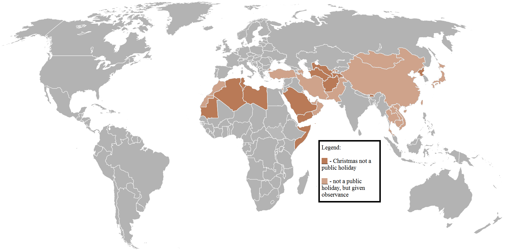

Christmas Customs
Christmas Day is celebrated as a major festival and public holiday in countries around the world, including many whose populations are mostly non-Christian. In some non-Christian areas, periods of former colonial rule introduced the celebration (e.g. Hong Kong); in others, Christian minorities or foreign cultural influences have led populations to observe the holiday. Countries such as Japan, where Christmas is popular despite there being only a small number of Christians, have adopted many of the secular aspects of Christmas, such as gift-giving, decorations, and Christmas trees.
Countries in which Christmas is not a formal public holiday include Afghanistan, Algeria, Azerbaijan, Bahrain, Bhutan, Cambodia, China (excepting Hong Kong and Macao), the Comoros, Iran, Israel, Japan, Kuwait, Laos, Libya, the Maldives, Mauritania, Mongolia, Morocco, North Korea, Oman, Pakistan, Qatar, the Sahrawi Republic, Saudi Arabia, Somalia, Tajikistan, Thailand, Tunisia, Turkey, Turkmenistan, the United Arab Emirates, Uzbekistan, Vietnam, and Yemen. Christmas celebrations around the world can vary markedly in form, reflecting differing cultural and national traditions.
Among countries with a strong Christian tradition, a variety of Christmas celebrations have developed that incorporate regional and local cultures. For Christians, participating in a religious service plays an important part in the recognition of the season. Christmas, along with Easter, is the period of highest annual church attendance. In Catholic countries, people hold religious processions or parades in the days preceding Christmas. In other countries, secular processions or parades featuring Santa Claus and other seasonal figures are often held. Family reunions and the exchange of gifts are a widespread feature of the season. Gift giving takes place on Christmas Day in most countries. Others practice gift giving on December 6, Saint Nicholas Day, and January 6, Epiphany.
